ggsave().Last week we finished up by plotting the number of filings per year for each agency. This week we’ll pick up right where we left off. First, let’s load the EIS data and remake the columns we need from last week:
eis <- read_csv("https://ucd-rdavis.github.io/R-DAVIS/data/eis_clean.csv") %>%
filter(filed_year <= 2025)
eis <- eis %>%
mutate(stage = case_when(
str_detect(document_type, "Draft") ~ "Draft",
str_detect(document_type, "Final") ~ "Final",
TRUE ~ "Other"
))
top_agencies <- eis %>%
count(lead_agency, sort = TRUE) %>%
slice_head(n = 6) %>%
pull(lead_agency)
eis <- eis %>%
mutate(agency = if_else(lead_agency %in% top_agencies, lead_agency, "Other agencies"))
yearly_counts <- eis %>%
count(filed_year, agency)ggplot2 has a special technique called
faceting that allows the user to split one plot into multiple
plots based on a factor included in the dataset. We will use it to make
a time series plot for each agency:
ggplot(data = yearly_counts, mapping = aes(x = filed_year, y = n)) +
geom_line() +
facet_wrap(~ agency)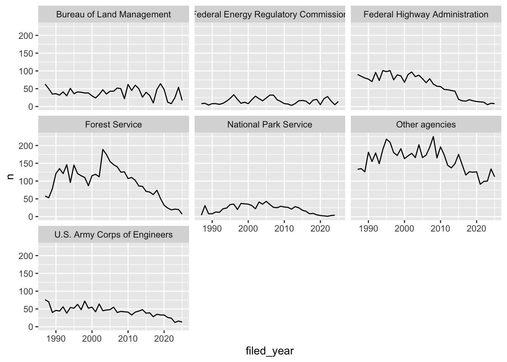
By default every panel uses the same y-axis, which makes it easy to
compare agencies to each other but squashes the smaller ones. If you’d
rather give each panel its own y-axis, use
scales = "free_y":
ggplot(data = yearly_counts, mapping = aes(x = filed_year, y = n)) +
geom_line() +
facet_wrap(~ agency, scales = "free_y")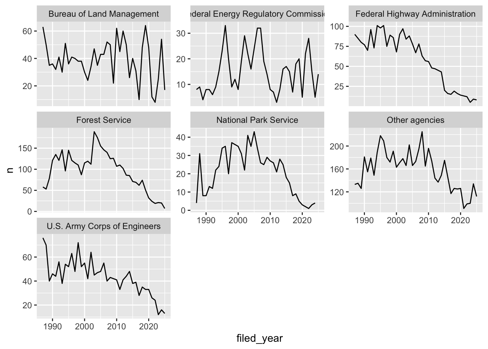
You are looking at a new dataset shared with you by a collaborator. You received the dataset shortly after the vernal equinox. Your collaborator didn’t really give you any context on what the data represent, and you need to do some preliminary visualizations before you can really even formulate a question for them. Import the mystery dataset using:
mystery <- read_csv("https://ucd-rdavis.github.io/R-DAVIS/data/mysteryData.csv")## Rows: 91325 Columns: 3
## ── Column specification ────────────────────────────────────────────────────────
## Delimiter: ","
## chr (1): Group
## dbl (2): x, y
##
## ℹ Use `spec()` to retrieve the full column specification for this data.
## ℹ Specify the column types or set `show_col_types = FALSE` to quiet this message.Can you figure out what this dataset represents?
Hint Use your new knowledge of faceting to break up the data
into groups, and consider changing the size and transparency of your
geom_’s to get a better look!
# Preview the data
mystery %>%
head(5)## # A tibble: 5 × 3
## x y Group
## <dbl> <dbl> <chr>
## 1 414. 282. A
## 2 412. 281. A
## 3 414. 281. A
## 4 26.2 275. A
## 5 33.9 275. A# Plot the data
ggplot(data = mystery, mapping = aes(x = x, y = y)) +
facet_wrap(~ Group) +
geom_point(size = 0.1, alpha = 0.01)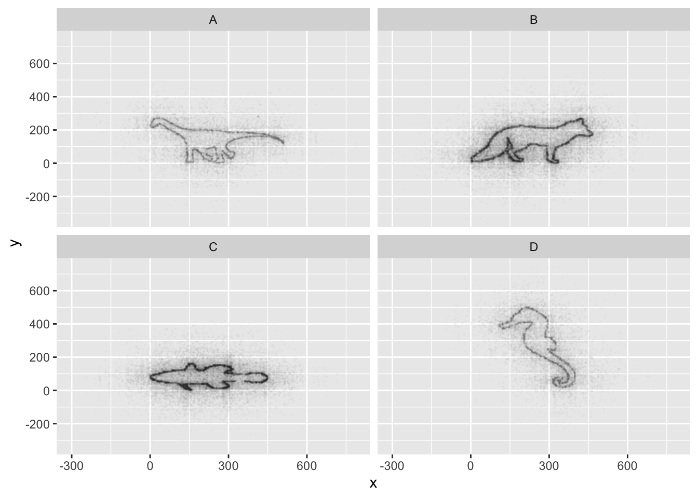
If all went well, and you faceted by group, set points to be very
small, and transparency to be very high (i.e., a low alpha
setting), you should discover that each group is the outline of a
different animal! You may notice that there is some distortion going on,
and our foxy friend in Group B appears to have some thick thighs. Try
equalizing the coordinate space in the x- and y-axes by adding a
coord_equal() to your ggplot() call:
## Equalize coordinate mapping
ggplot(data = mystery, mapping = aes(x = x, y = y)) +
facet_wrap(~ Group) +
geom_point(size = 0.1, alpha = 0.01) +
coord_equal()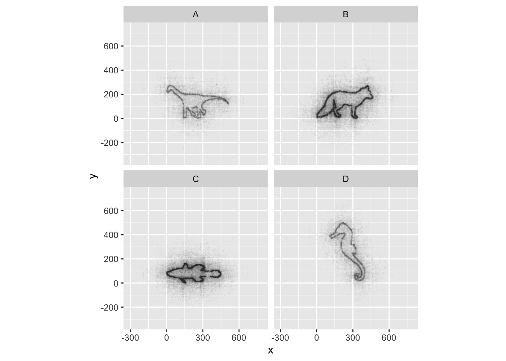
This challenge was inspired by Trevor Branch’s Coelocanth post on Twitter and adapted by Christian John.
ggplot2 themesggplot Themes are a great, easy addition that can make all your plots more readable (and a lot more pretty!)
In addition to theme_bw(), which changes the plot
background to white, ggplot2 comes with
several other themes which can be useful to quickly change the look of
your visualization. The complete list of themes is available at https://ggplot2.tidyverse.org/reference/ggtheme.html.
theme_minimal() and theme_light() are popular,
and theme_void() can be useful as a starting point to
create a new hand-crafted theme.
Usually plots with white background look more readable when printed.
We can set the background to white using the function
theme_bw(). Additionally, you can remove the grid:
ggplot(data = yearly_counts, mapping = aes(x = filed_year, y = n)) +
geom_line() +
facet_wrap(~ agency) +
theme_bw() +
theme(panel.grid = element_blank())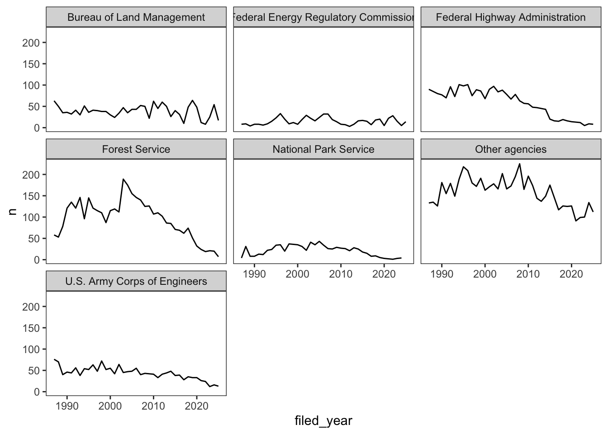
Let’s make one final change to our facet wrapped plot of our yearly count data. What if we wanted to split the counts for each agency up by stage, where the lines for drafts and finals are different colors? Leave out the “Other” stage. Make sure you have a nice theme on your graph too!
Hint Make a new dataframe using the count
function we learned earlier!
#new data frame counting the number of filings of each stage for each agency
yearly_stage_counts <- eis %>%
filter(stage != "Other") %>%
count(filed_year, agency, stage)
#plot code
ggplot(data = yearly_stage_counts, mapping = aes(x = filed_year, y = n, color = stage)) +
geom_line() +
facet_wrap(~ agency) +
theme_bw()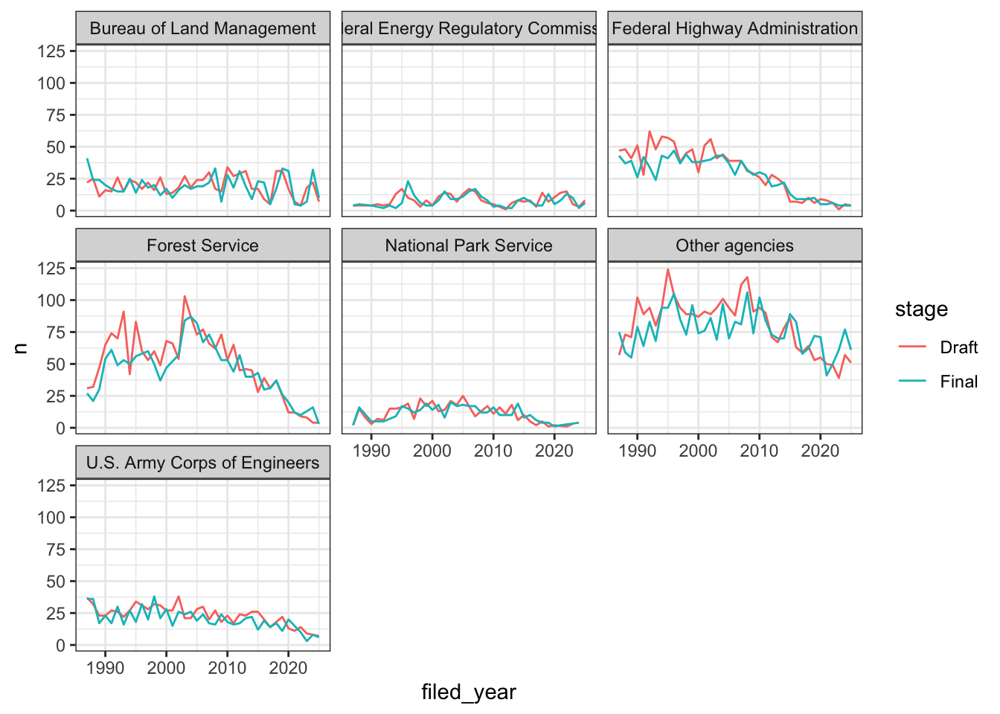
Remember all those NA values in epa_impact?
Use what you just learned to create a plot that depicts how the share of
filings the EPA rated (the ones where epa_impact is not
NA) changes through the years for each agency. What do you
notice?
Hint mean() of a column of TRUE
and FALSE values gives you the share that are
TRUE.
#create a new dataframe
yearly_rated <- eis %>%
group_by(filed_year, agency) %>%
summarize(share_rated = mean(!is.na(epa_impact)))## `summarise()` has regrouped the output.
## ℹ Summaries were computed grouped by filed_year and agency.
## ℹ Output is grouped by filed_year.
## ℹ Use `summarise(.groups = "drop_last")` to silence this message.
## ℹ Use `summarise(.by = c(filed_year, agency))` for per-operation grouping
## (`?dplyr::dplyr_by`) instead.ggplot(data = yearly_rated, mapping = aes(x = filed_year, y = share_rated)) +
geom_line() +
facet_wrap(~ agency) +
theme_bw()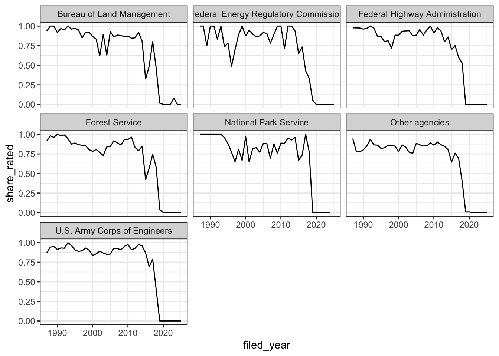
Up until around 2015, the EPA rated most of the filings from every
agency. After that the share drops, and by 2019 almost none of the
filings in our data have a rating. This is a good reminder to look at
where your NA values are before you draw conclusions.
There are many tips and tricks that are available for the multitude of visualization packages in R. However, there aren’t as many simple rules or suggestions on what actually makes a good visualization. This starts with the “grammar of graphics”, which is the fundamental rules or principals which describe an art or science (from Wickham 2010).
“A good grammar will allow us to gain insight into the composition of complicated graphics, and reveal unexpected connections between seemingly different graphics (Cox 1978)”
Because there are so many options and methods to plot our data in R, we need to think about how we are going to represent the data, how can that data be interpreted visually, and what story it may tell.
A very nice example of this is provided by this animation (created by Darkhorse Analytics, and used in Jenny Bryan’s stat545 course). It shows how simplification can make a big difference in communication.
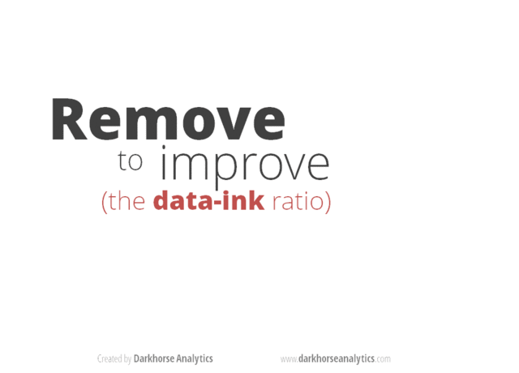
One thing to consider is what the objective is when creating a visualization or plot. When we build plots for exploratory purposes, we already know what the variables are we are using, and the objective is more about what sort of patterns the data might show. When communicating, the objective is more about providing a stand-alone snapshot which helps others understand what you are trying to convey.
Most of the plots you’ll make answer one of a handful of questions, and each question has a kind of plot that usually works best. You’ve already made all of these:
comment_days and epa_lag
last weekIf you want to go deeper, Claus Wilke’s free online book Fundamentals of Data Visualization has a chapter on each of these, and is opinionated in a helpful way about which plots work and which don’t.
Here’s our count of filings for each agency from last week:
ggplot(data = eis, mapping = aes(y = agency)) +
geom_bar()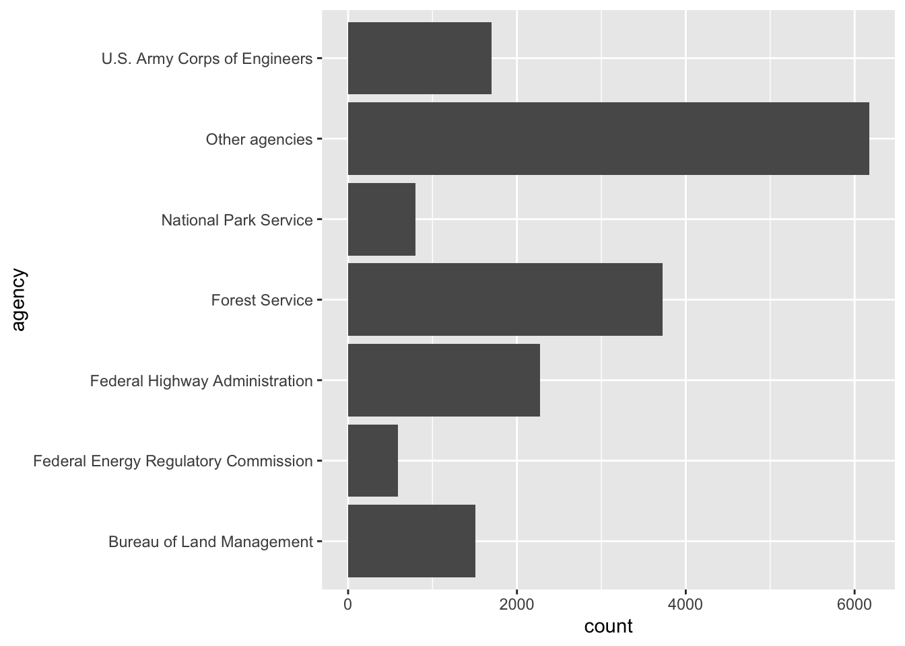
The agencies are in alphabetical order, which doesn’t tell us
anything. It’s much easier to compare the bars if they’re sorted by
size. The function fct_infreq(), from the tidyverse package
forcats, orders a variable from the most
common value to the least:
ggplot(data = eis, mapping = aes(y = fct_infreq(agency))) +
geom_bar()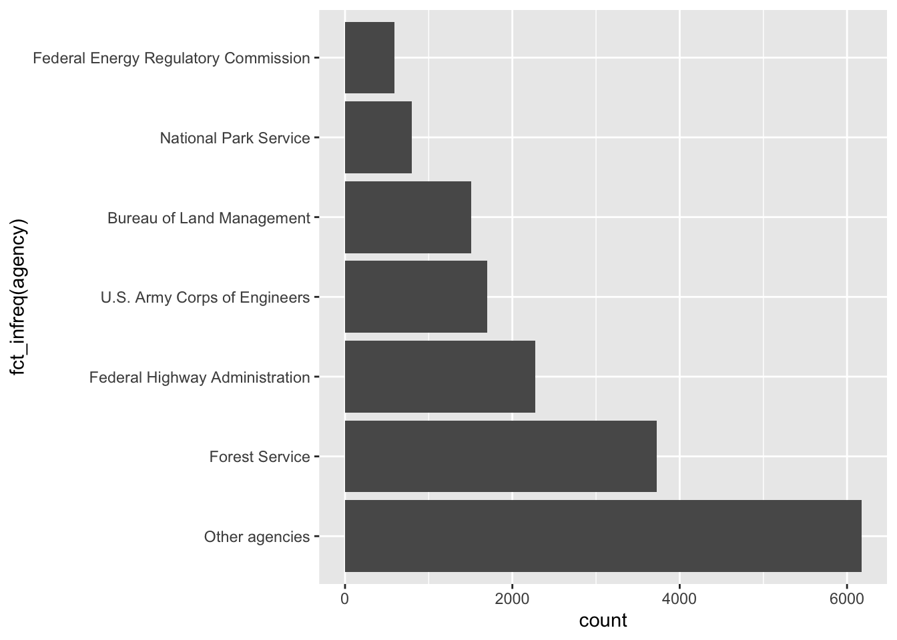
That’s closer, but the biggest bar is at the bottom.
fct_rev() flips the order. And “Other agencies” isn’t
really one agency, so it makes more sense at the end, no matter how big
it is. fct_relevel() moves it to the front of the list,
which puts it at the bottom of the plot:
eis_ordered <- eis %>%
mutate(agency = fct_rev(fct_infreq(agency)),
agency = fct_relevel(agency, "Other agencies"))
ggplot(data = eis_ordered, mapping = aes(y = agency)) +
geom_bar()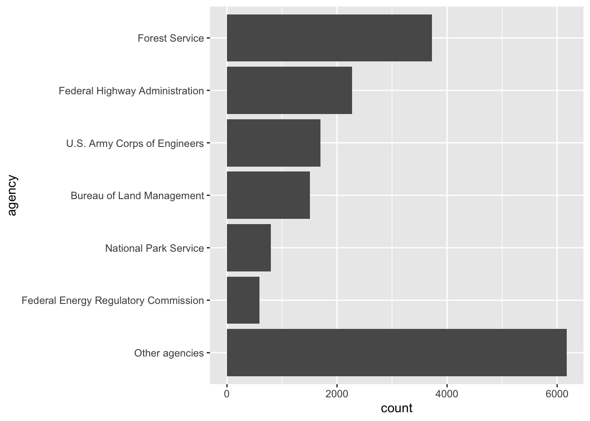
Let’s count up the total number of filings each year and plot them as a line:
yearly_total <- eis %>%
count(filed_year)
ggplot(data = yearly_total, mapping = aes(x = filed_year, y = n)) +
geom_line()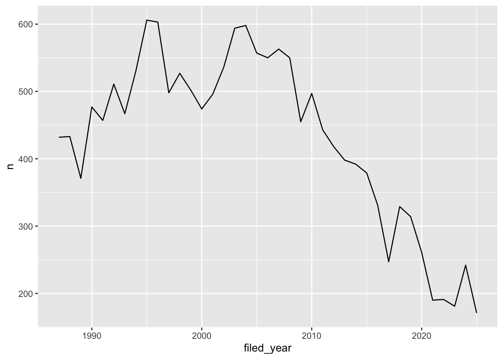
Notice that ggplot didn’t start the y-axis at zero. It starts a little below the smallest value, so the line fills up the plot. That’s fine for a line plot. We read a line by how it goes up and down, not by how far it is from the bottom of the plot.
Now let’s compare the number of draft statements to the number of
final statements, cropping the y-axis the same way with
coord_cartesian():
eis %>%
filter(stage != "Other") %>%
ggplot(mapping = aes(x = stage)) +
geom_bar() +
coord_cartesian(ylim = c(7500, 9000))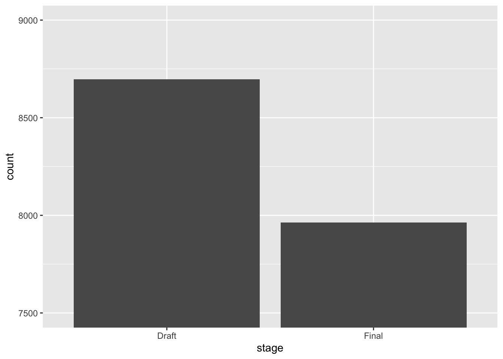
Why is this figure misleading? Look at how long each bar is compared to the actual numbers on the y-axis.
Here’s the same plot with the y-axis starting at zero:
eis %>%
filter(stage != "Other") %>%
ggplot(mapping = aes(x = stage)) +
geom_bar()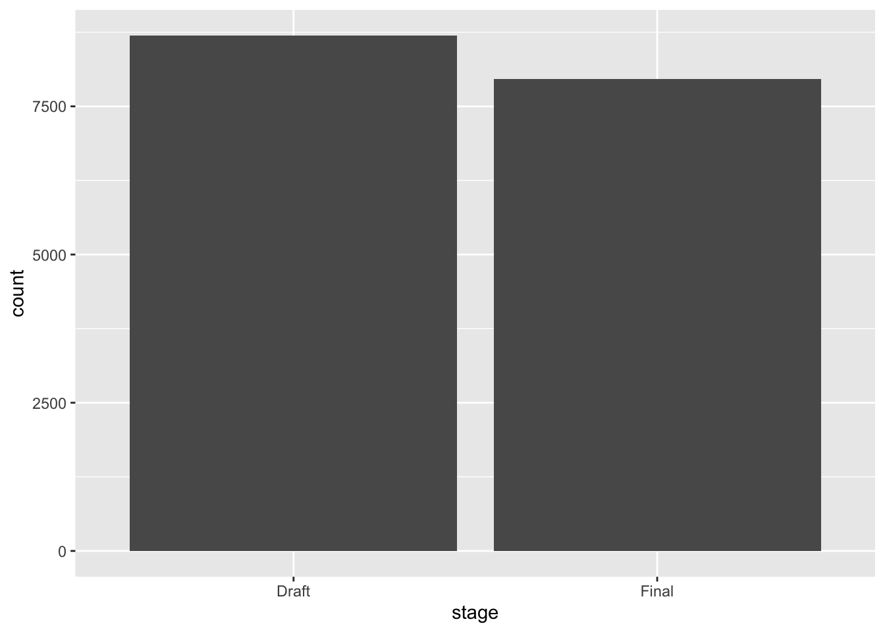
The cropped version makes it look like there are about four times as many drafts as finals. There are actually 8,697 drafts and 7,963 finals, so the difference is pretty small. We read a bar by its length, so if the axis doesn’t start at zero, the lengths lie. Bar charts should always start at zero.
Pie charts are popular, but it’s hard to compare the sizes of slices,
especially when they’re close. ggplot doesn’t have a pie chart geom, but
you can make one by wrapping a bar chart into a circle with
coord_polar():
ggplot(data = eis, mapping = aes(x = "", fill = agency)) +
geom_bar() +
coord_polar(theta = "y")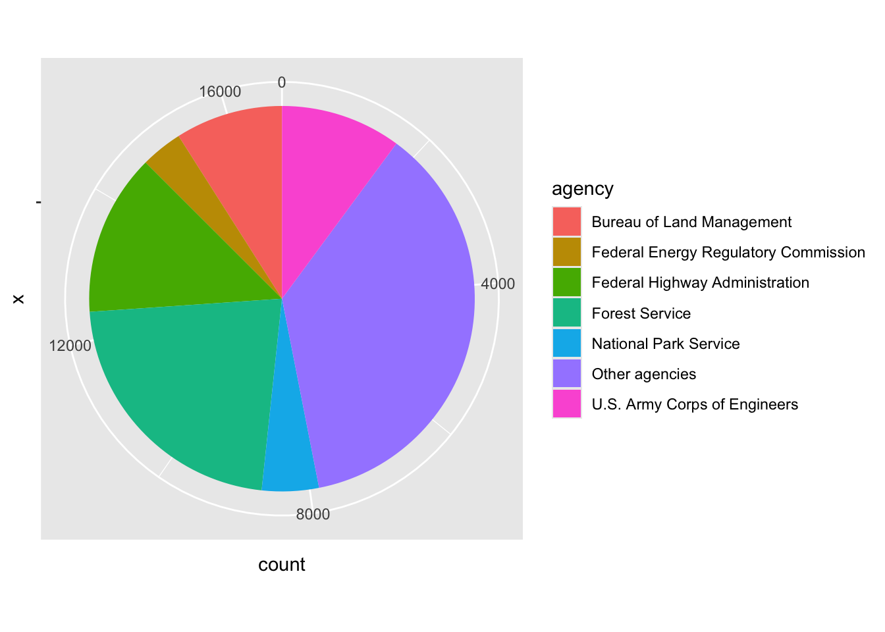
Is the Army Corps of Engineers slice bigger or smaller than the
Bureau of Land Management slice? Hard to say. If you want to show
shares, a filled bar chart is usually easier to read.
position = "fill" stretches every bar to the same length,
so each one shows proportions instead of counts:
eis %>%
filter(stage != "Other") %>%
ggplot(mapping = aes(y = agency, fill = stage)) +
geom_bar(position = "fill")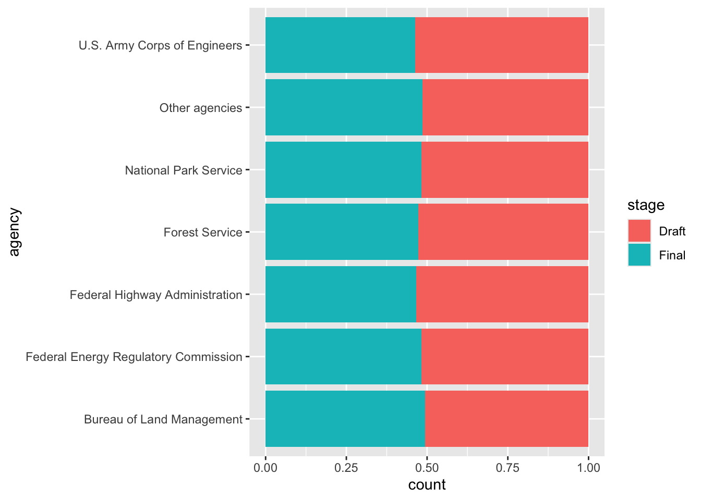
There are so many options in R. It is fun to play around with color, but the most important thing is to pick colors that match your data. There are three main kinds of color palettes:
Remember our line plot of yearly filings for each agency? Here it is with ggplot’s default colors:
ggplot(data = yearly_counts, mapping = aes(x = filed_year, y = n, color = agency)) +
geom_line()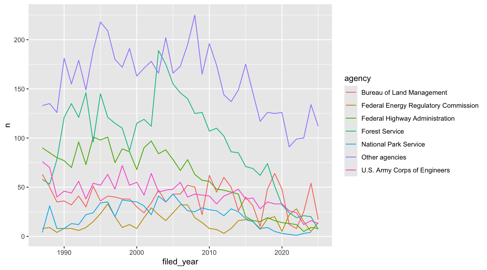
The default colors work for categories, but some of them are hard to
tell apart, especially for folks with colorblindness. The Okabe-Ito
palette was designed so that people with the most common kinds of
colorblindness can still tell the colors apart, and it comes with R.
palette.colors() gives us the colors, and
scale_color_manual() lets us use our own colors:
ggplot(data = yearly_counts, mapping = aes(x = filed_year, y = n, color = agency)) +
geom_line() +
scale_color_manual(values = palette.colors(palette = "Okabe-Ito"))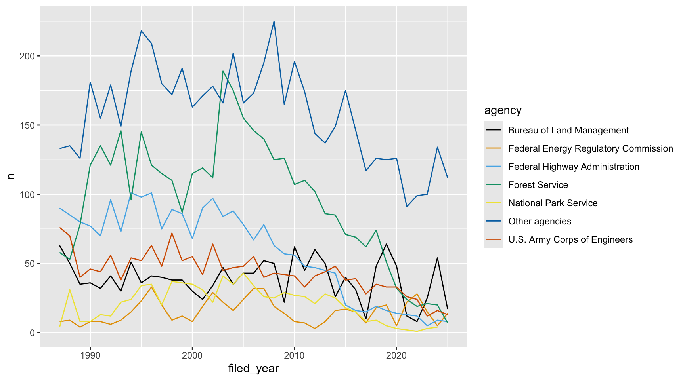
Even with good colors, seven lines is a lot to follow. If your plot has one main point, you can make everything else gray. Let’s say we want to show what happened to the Federal Highway Administration. First we make a column that says whether each row is the agency we care about:
yearly_highlight <- yearly_counts %>%
mutate(highlight = agency == "Federal Highway Administration")Then we color by that column. We still need
group = agency so that ggplot draws a separate line for
each agency:
ggplot(data = yearly_highlight, mapping = aes(x = filed_year, y = n, group = agency, color = highlight)) +
geom_line() +
scale_color_manual(values = c("grey75", "firebrick"))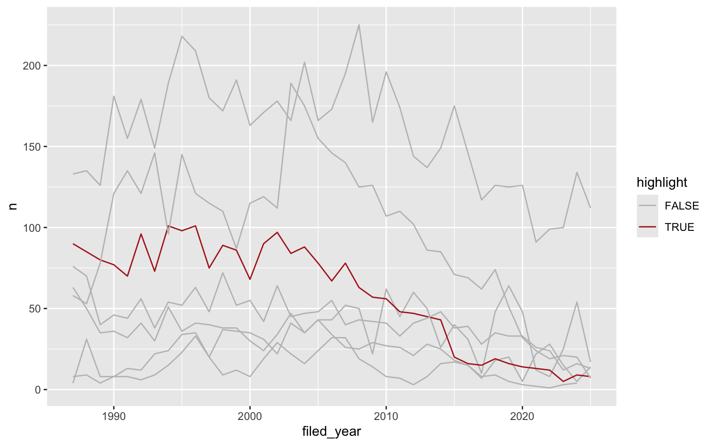
Here’s a new kind of plot: a heatmap. geom_tile() draws
a square for each year and agency, and we fill it based on the number of
filings. We’ll save it as an object so we can try a few different color
scales:
eis_heatmap <- ggplot(data = yearly_counts, mapping = aes(x = filed_year, y = agency, fill = n)) +
geom_tile()
eis_heatmap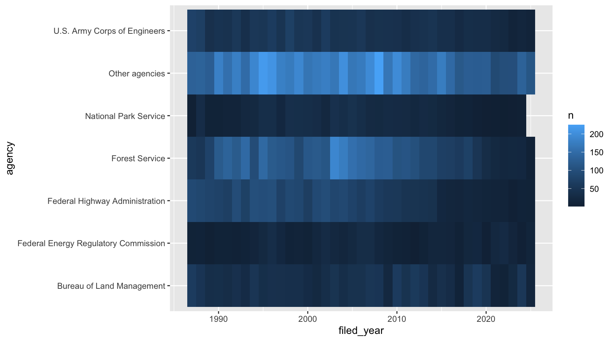
The number of filings goes from low to high, so ggplot uses a sequential palette by default, from dark blue to light blue. It works, but it’s hard to see differences between the blues.
The viridis
palettes are an excellent set of colors that better represent your data,
are easier to read for those with colorblindness, and they also tend to
print fairly well in grayscale. They’re built into ggplot, and you can
call upon them using the scale_fill_viridis_ or
scale_color_viridis_ functions. Note that whether or not
you use the fill or color scale function depends on which aesthetic you
set in your plot. The functions also have extensions depending on the
kind of variable that you want to color:
scale_fill_viridis_d is for discrete variables while
scale_fill_viridis_c is for continuous variables.
eis_heatmap +
scale_fill_viridis_c()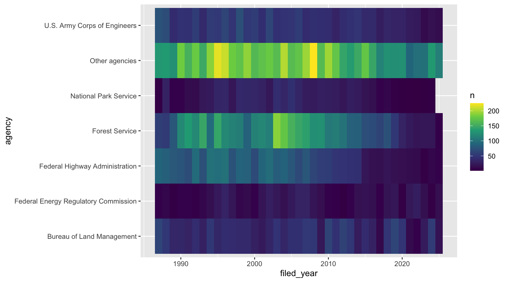
What not to do: a rainbow palette.
eis_heatmap +
scale_fill_gradientn(colors = rainbow(7))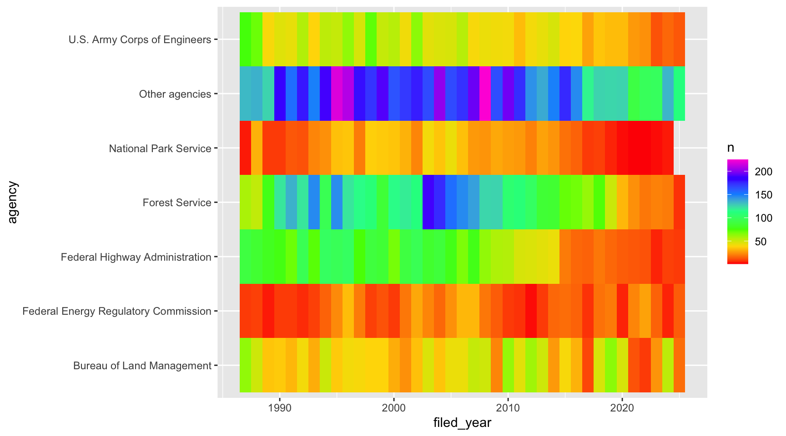
The rainbow doesn’t have an order. Is purple more than green? The colors also jump around, so years with 100 and 150 filings look like totally different things, while years with 150 and 200 look about the same.
Categories can have an order too. The EPA’s impact ratings go from best to worst, so the colors should too. Let’s look at the share of each rating for each agency. We’ll use only the rated drafts from 2018 and earlier, since that’s when the ratings stop showing up in our data:
drafts_rated <- eis %>%
filter(stage == "Draft", !is.na(epa_impact), filed_year <= 2018) %>%
mutate(epa_impact = factor(epa_impact, levels = c("Lack of Objections",
"Environmental Concerns",
"Environmental Objections",
"Environmentally Unsatisfactory")))ggplot(data = drafts_rated, mapping = aes(y = agency, fill = epa_impact)) +
geom_bar(position = "fill")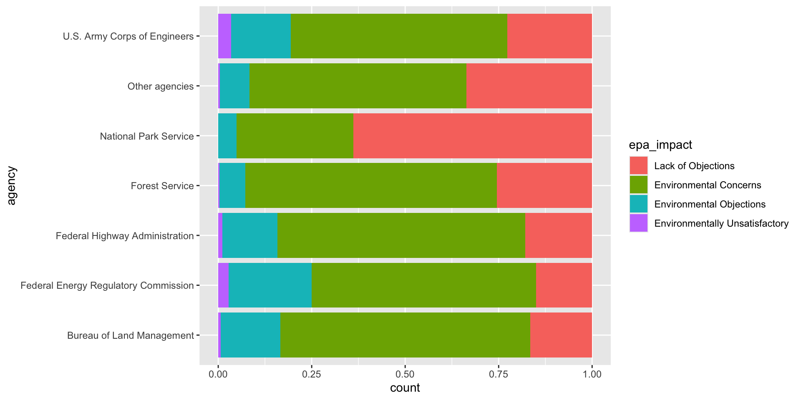
The default colors treat the ratings like they have no order. A
sequential palette from the ColorBrewer palettes, which are
built into ggplot with scale_fill_brewer(), makes the order
obvious: pale is fine, red is bad.
ggplot(data = drafts_rated, mapping = aes(y = agency, fill = epa_impact)) +
geom_bar(position = "fill") +
scale_fill_brewer(palette = "YlOrRd")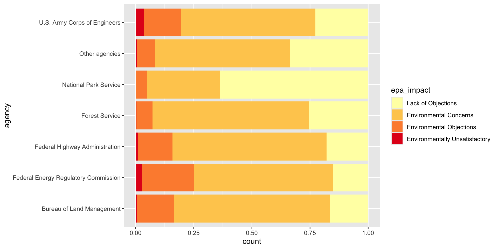
A diverging palette only makes sense when the middle of your scale means something. Let’s ask a different question: was each year busier or slower than usual for that agency? We’ll calculate how far above or below its own average each agency was every year, as a percent:
yearly_diff <- yearly_counts %>%
group_by(agency) %>%
mutate(pct_diff = (n - mean(n)) / mean(n) * 100) %>%
ungroup()Now zero means “an average year”, so we want white in the middle, one
color for busier years and another for slower ones.
scale_fill_gradient2() does exactly that, with the middle
at zero by default:
ggplot(data = yearly_diff, mapping = aes(x = filed_year, y = agency, fill = pct_diff)) +
geom_tile() +
scale_fill_gradient2(low = "#2166AC", mid = "white", high = "#B2182B")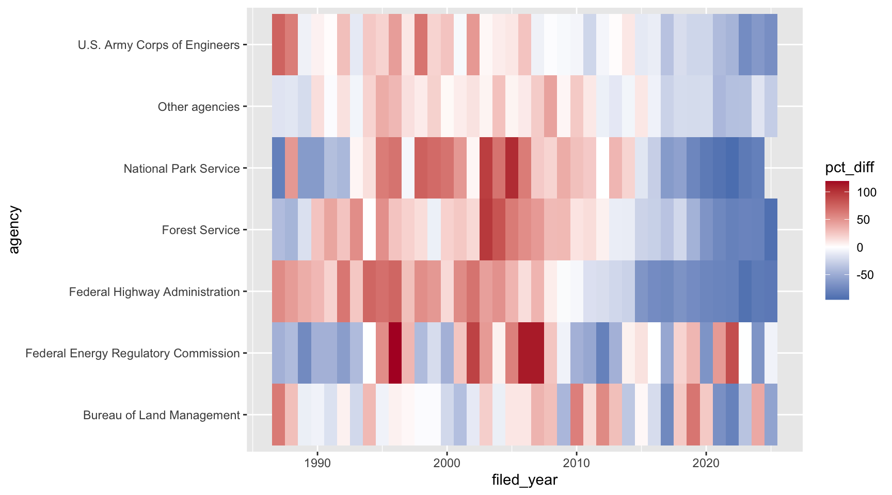
Almost every agency was busier than usual in the 1990s and 2000s, and slower than usual after about 2015.
Keep in mind not everyone sees color in the same way, and some folks cannot see certain spectrums of color. About 1 in 12 men and 1 in 200 women have some kind of colorblindness. You can check how your plot looks to them by uploading an image to a simulator like Coblis. For more on picking colors, check out the color chapters in Fundamentals of Data Visualization and this Nature perspective piece on The misuse of colour in science communication.
For each of these plots, which kind of color palette would you use, and why?
stageThen pick one of the plots we made today and try out a different palette that fits.
Our plots so far have used the column names as labels, which is fine while you’re exploring, but not when you’re showing a plot to someone else. Here’s our ordered bar chart from earlier, with all of ggplot’s defaults:
ggplot(data = eis_ordered, mapping = aes(y = agency)) +
geom_bar()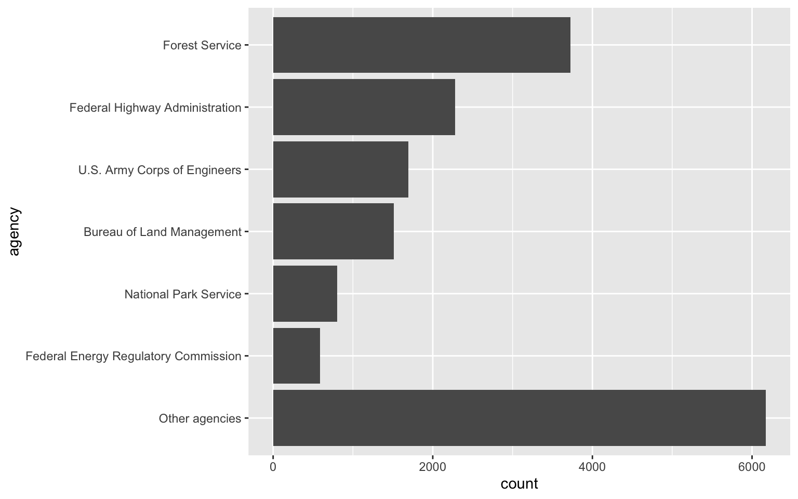
labs() lets you set the title, subtitle, axis labels,
and a caption. A good title says what the reader should take away from
the plot, not just what’s on the axes. Let’s also change the color and
theme:
ggplot(data = eis_ordered, mapping = aes(y = agency)) +
geom_bar(fill = "darkgreen") +
labs(title = "The Forest Service files more EISs than any other agency",
subtitle = "Environmental impact statements filed with the EPA, 1987-2025",
x = "Number of filings",
y = NULL,
caption = "Data: U.S. EPA Environmental Impact Statement database") +
theme_bw()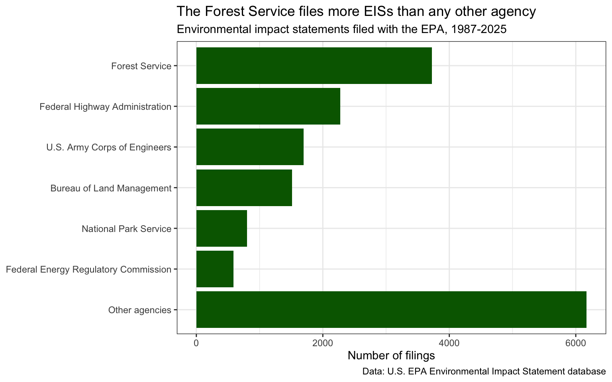
Setting y = NULL removes the y-axis label, since the
agency names speak for themselves.
The scales package, which comes with
ggplot, has functions to format the numbers on an axis.
label_comma() adds commas to big numbers:
ggplot(data = eis_ordered, mapping = aes(y = agency)) +
geom_bar(fill = "darkgreen") +
scale_x_continuous(labels = scales::label_comma()) +
labs(x = "Number of filings", y = NULL) +
theme_bw()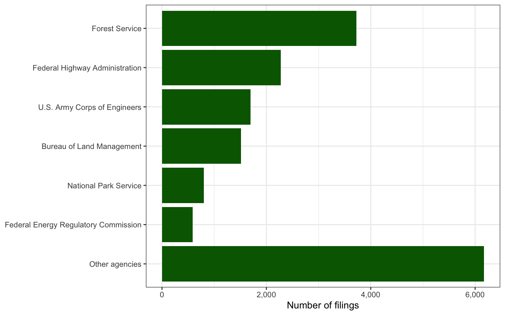
You can also add text or shapes right onto the plot with
annotate(). Unlike a geom, annotate() doesn’t
use the data, so you give it the positions yourself. Let’s point out the
busiest year:
ggplot(data = yearly_total, mapping = aes(x = filed_year, y = n)) +
geom_line() +
annotate("point", x = 1995, y = 606, color = "firebrick", size = 3) +
annotate("text", x = 1995, y = 631, label = "606 filings in 1995") +
labs(x = "Year filed", y = "Number of filings") +
theme_bw()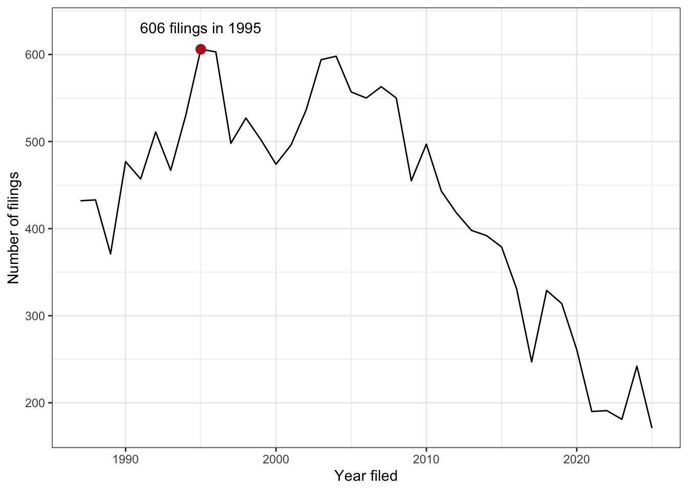
This information isn’t meant to be comprehensive, but at minimum, it may provide some guidance when you are creating plots and figures.
The most basic tip is keep it simple! Stick with a clean and clear message, what is your plot/figure trying to get across? Data visualization is effective when it is simple, and repackages data into a visual story that is easy to understand.
A few things to avoid (which basically relates to keeping it simple):
A plot you created with ggplot or another plotting package can be
saved as .JPEGS (or .tiff, .img, etc) onto you. For any ggplot objects,
we recommend using ggsave.
First, let’s create a new folder in this project called
figures. Let’s save all the figures we create to that
folder. ggsave will default to saving the last plot you
created, however, we think it is always a good idea to specify exactly
which plot you want saved. To do that, we have to save our plot as an
object.
ggsave("figures/eis_heatmap.png", eis_heatmap)ggsave you can save images asggsavescale can scale the image (multiplicative scaling
factor)width and height let you specify the size
of the image in units that you specifydpi can change the quality of the image; for
publication graphs we suggest over 700 dpiggsave("figures/eis_heatmap.png", eis_heatmap, width = 6, height = 4, units = "in", dpi = 700)This lesson was contributed by Martha Zillig.
This lesson is adapted from the Data Carpentry: R for Data Analysis and Visualization of Ecological Data Data visualization with ggplot2 materials. Data are from the U.S. EPA’s Environmental Impact Statement database. The course file is a cleaned subset prepared for teaching (see the codebook).